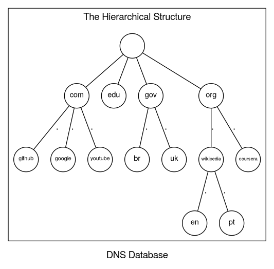

DNS
The Domain Name System is a distributed database. This structure allows local control of the segments of the overall database, yet data in each segment is available across the entire network through a client/server scheme. Robustness and adequate performance are achieved through replication and caching.
Programs called nameservers constitute the server half of DNS's client/server mechanism. Nameservers contain information about some segments of the database and make that information available to clients, called resolvers. Resolvers are often just library routines that create queries and send them across a network to a nameserver. (Liu and Albitz 2006, chap. 1 p.4)
> dig +noall +answer wikipedia.org
wikipedia.org. 276 IN A 195.200.68.224
# or
> dig +noall +answer wikipedia.org AAAA
wikipedia.org. 185 IN AAAA 2a02:ec80:700:ed1a::1
| Human-Friendly Name | Machine-Friendly Name |
|---|---|
| www.wikipedia.com | 195.200.68.224 |
| dns.cloudfare.com | 1.1.1.1 |
The Domain Namespace
Each node in the tree has a text label (without dots) that can be up to 63 characters long. A null (zero-length) label is reserved for the root. The full domain name of any node in the tree is the sequence of labels on the path from that node to the root. Domain names are always read from the node toward the root (“up” the tree), with dots separating the names in the path.

Domains and Subdomains
A domain may have several subtrees of its own, called subdomains.
A simple way of determining if a domain is a subdomain of another domain is to compare their domain names. A subdomain's domain name ends with the domain name of its parent domain.
- A domain is a set of related nodes.
- Every node in the DNS tree has a label.
- The root label is empty.
- Labels are separated by a dot (
.). - Items are sorted from most to least specific (i.e.
en.wikipedia.org->wikipedia.org->org).
| Node | Subdomain | Domain | TLD | Root | |||
|---|---|---|---|---|---|---|---|
| www | . | abc | . | xyz | . | com | |
| www | . | en | . | wikipedia | . | org |
where TLD is an abbreviation for "Top Level Domain".
Resource Records
The data associated with domain names is contained in resource records, or RRs. Records are divided into classes, each of which pertains to a type of network or software.
Delegation
In DNS, each domain can be broken into a number of subdomains, and responsibility for those subdomains can be doled out to different organizations. For example, an organization called EDUCAUSE manages the
edu(educational) domain but delegates responsibility for theberkeley.edusubdomain to U.C. Berkeley.
- Delegation allows an organization to assign control of a subdomain to another organization.
- Zones are the administrative unit in DNS.
We can see all the delegation zones when running dig with the +trace option.
> dig +trace guix.gnu.org
; <<>> DiG 9.20.18 <<>> +trace guix.gnu.org
;; global options: +cmd
. 86400 IN NS c.root-servers.net.
. 86400 IN NS d.root-servers.net.
. 86400 IN NS g.root-servers.net.
. 86400 IN NS j.root-servers.net.
. 86400 IN NS i.root-servers.net.
. 86400 IN NS k.root-servers.net.
. 86400 IN NS m.root-servers.net.
. 86400 IN NS e.root-servers.net.
. 86400 IN NS f.root-servers.net.
. 86400 IN NS h.root-servers.net.
. 86400 IN NS l.root-servers.net.
. 86400 IN NS b.root-servers.net.
. 86400 IN NS a.root-servers.net.
. 86400 IN RRSIG NS 8 0 518400 20260330170000 20260317160000 21831 . UvAJnsA3HINQiVD0um+pXMe4GgX0HA1xPbdQhxImQ2bt9HDuiv9MGHnb W1t9c+hyZ8T/kSbJCjvQljr2kdnEAx2EnZD/ipT0tIxvVIV0fLcdH2w9 q9UCUV1JhThdrDlNzFzxSnVA+6WN/UwMWO4tXiTZIyJz2ORDwMzhI6fR 3ve2D6xvikAhBdlsMs0LimbACtdxdPHSBU0JkOWOCdwH0N3hUdyKjQVw Ce6uKI4bbXp3MbFqgN/II+01Cx4IsLOSQzwTjEHHgHnJDNdFAQ9LYD9s uVval+ihCkpOlfjSNrEGPK3Db+YM7reCmK61V0do8KFyi/YfyjA9mXmJ v6pUnA==
;; Received 1097 bytes from 192.168.2.1#53(192.168.2.1) in 42 ms
org. 172800 IN NS b0.org.afilias-nst.org.
org. 172800 IN NS a0.org.afilias-nst.info.
org. 172800 IN NS a2.org.afilias-nst.info.
org. 172800 IN NS d0.org.afilias-nst.org.
org. 172800 IN NS c0.org.afilias-nst.info.
org. 172800 IN NS b2.org.afilias-nst.org.
org. 86400 IN DS 26974 8 2 4FEDE294C53F438A158C41D39489CD78A86BEB0D8A0AEAFF14745C0D 16E1DE32
org. 86400 IN RRSIG DS 8 1 86400 20260330170000 20260317160000 21831 . qWBRze3LuB6CEKzX/hrdbFeveEBjZqWPe63z/xLmDE325xqPkAAj/IvI DQrCxmnIPeFHTFDFWq17iHPCo42bO715tg2DuwEg/QG58a1k1ZQRmMov FgXdmHQP/vPixFG+3KkWKT1P3gNTZpvKypla0AgT57IANq6y+AxUjcMO UuGEyp9PGrp+zdpnhlDEbK1juzU4zBwQVUD5+b+cpr7PAt3grBLgkKbp VOV9yp/8Y01MruDnVQ+ufKQ+TIa61eGjQ+RusJokiiCQ/ZQNjtvcp09l /LIFSQFjgK8tMX75Bced1xxbxRo5nQuRnL9qk42wyMUvKW9tPo0P/Bp0 XHD+sw==
;; Received 806 bytes from 192.36.148.17#53(i.root-servers.net) in 31 ms
gnu.org. 3600 IN NS ns1.gnu.org.
gnu.org. 3600 IN NS ns2.gnu.org.
gnu.org. 3600 IN NS ns4.gnu.org.
gdtpongmpok61u9lvnipqor8lra9l4t0.org. 3600 IN NSEC3 1 1 0 332539EE7F95C32A GDTREA8KMJ2RNEQEN4M2OGJ26KFSUKJ7 NS SOA RRSIG DNSKEY NSEC3PARAM
gdtpongmpok61u9lvnipqor8lra9l4t0.org. 3600 IN RRSIG NSEC3 8 2 3600 20260407195629 20260317185629 29805 org. FLEM6HTzpn+NuTpE245V/ebV6V7GSOTITM9mNir/kFsA+pbbcPvPIf9R oz15PFRQcZljD7TrXU86sL4ufSFq4neYbWuXqB/9RHUjDV5yBb01wzfy C7oJdAJuIgWqTkMXQXRqOAjq4imMGQrzbqlEX6f745UOG/YfiRVOUrlq atU=
75u43m27modtpregu0d0merldse1krqf.org. 3600 IN NSEC3 1 1 0 332539EE7F95C32A 75U4T5QDUA8DUFCDA7PB5HRA87F07G6N NS DS RRSIG
75u43m27modtpregu0d0merldse1krqf.org. 3600 IN RRSIG NSEC3 8 2 3600 20260407152334 20260317142334 29805 org. a5+0aYDeY3x+YSdpOC2WzEQRByhI82fAPZSnLW2VQIaJlDrOn6HOowqj IPeJ3wutqmIlGFmmyVKcvIZMVlXo4ghFJxjZcxS05MReJRFQOT6ZB0qJ tA3jmhWdjW0u0zzuoA2/SUyhV978gK+bT9fBGJoArJgWa057IOlXnir3 j0A=
;; Received 728 bytes from 199.19.56.1#53(a0.org.afilias-nst.info) in 327 ms
;; UDP setup with 2607:5300:60:4a62::1#53(2607:5300:60:4a62::1) for guix.gnu.org failed: network unreachable.
guix.gnu.org. 3600 IN A 46.224.9.33
guix.gnu.org. 3600 IN NS ns1.gnu.org.
guix.gnu.org. 3600 IN NS ns3.gnu.org.
guix.gnu.org. 3600 IN NS ns2.gnu.org.
guix.gnu.org. 3600 IN NS ns4.gnu.org.
;; Received 163 bytes from 188.165.235.157#53(ns4.gnu.org) in 249 ms
Root Servers
The root zone is overseen by ICANN (Internet Corporation for Assigned Names and Numbers) and its name servers are hosted by a total of 12 organizations, this can be verified on the list published by IANA (a subsidiary of ICANN).
> dig +short ns .
g.root-servers.net.
e.root-servers.net.
l.root-servers.net.
m.root-servers.net.
a.root-servers.net.
j.root-servers.net.
c.root-servers.net.
h.root-servers.net.
d.root-servers.net.
i.root-servers.net.
k.root-servers.net.
b.root-servers.net.
f.root-servers.net.
Name Servers and Resolvers

There are two types of DNS servers:
- Authoritative
- Answer queries for specific zones they have authority over.
- Recursive
- Perform DNS lookups for users, retrieving and collecting DNS data from authoritative servers by using recursive queries. Accepting a recursive query forces a given name server to follow all the links until a match occurs or no more referrals are found.
| Zone | Name Server |
|---|---|
| wikipedia.org | |
| wikipedia.org | |
| wikipedia.org | |
| org |
dig +noall +answer +trace en.wikipedia.org
Caching
- TTLs can range from seconds to hours to days.
- The administrator of a zones are the ones decidings the values for the TTLs.
Zone Transfer
DNS servers stay in sync using a Leader/Follower (Primary/Secondary) architecture. Instead of manual updates, they use a process called Zone Transfer to ensure every server has the same information.
The SOA Record
Before any data moves, the secondary server checks the Start of Authority (SOA) record. This record acts as the "version control" and configuration manual for the zone.
- Serial Number
- If the secondary server sees a higher number on the primary, it knows it's time to update.
- Refresh/Retry/Expire
- Timers that tell the follower how often to check for updates, how long to wait if a connection fails, and when to give up and stop serving old data.
- Admin Contact
- An email for the zone administrator.
When a follower realizes its data is outdated, it initiates one of two types of transfers over TCP/IP:
AXFR(Full Zone Transfer): The follower requests everything. The primary sends the entire database for that zone.IXFR(Incremental Zone Transfer): A more efficient "patch" update. The follower only requests changes that happened since a specific serial number.- DNS Notify: To prevent long delays, the primary can proactively "ping" followers to tell them an update is ready, rather than waiting for the next refresh cycle.
While zone transfers are the "classic" way to sync, the landscape has changed:
- Security Risks: If a server allows anyone to perform an AXFR, hackers can download a complete map of every sub-domain and IP address in a network. Therefore, transfers should be restricted to trusted IPs.
- Cloud Providers: Many modern services ignore zone transfers entirely.
Top-Level Domains
Types
| Name | Description | Length | Quantity (Approximated) |
|---|---|---|---|
ccTLD |
Managed by a country | 2 characters | 250 |
gTLD |
Generic, managed by commercial or non-profit organizations | 3+ characters | 1250 |
Records
| Record Name | Synonims | Description |
|---|---|---|
A |
Maps a domain name to an IPV4 address | |
AAAA |
Quad A | Maps a domain name to an IPV6 address |
NS |
Maps a domain name to an authoritative DNS server |